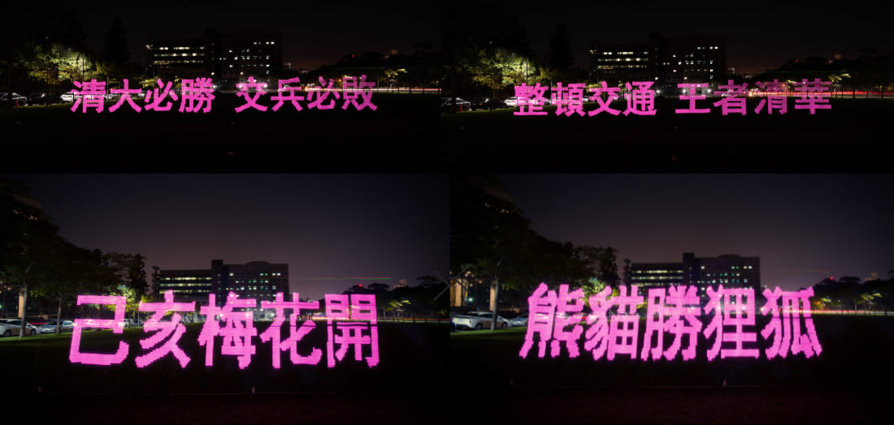
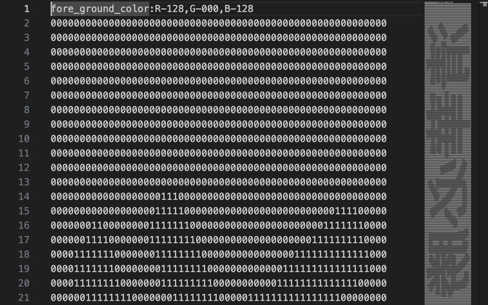

Tsinghua Light Bar
Transforming LED batons into a POV light-drawing device.
Interactive Light Art
POV LED
LoRa Wireless Control
Image-to-Light Mapping
TIME | 2018
AUTHORS | Shih-Da Liu, Su-Chu Hsu, Po-Yao Wu
MOTIVATION |
Tsinghua Light Bar reinterprets the LED baton first designed for the 2017 Summer Universiade opening ceremony, transforming it into a mobile light-drawing tool. Through converting black-and-white images into moving points of light and using persistence-of-vision (POV), participants can “paint” glowing text or graphics—such as “NTHU”—into the night air as they run. What once served as a synchronized performance prop is reimagined as a playful interface that enables spontaneous light graffiti and shared campus expression. The project demonstrates how a ceremonial technological artifact can be revived and expanded into a participatory medium for creative engagement.
APPROACH |
Rebuilt in collaboration with LED-system designer Liu Shih-Da, the baton integrates POV LED arrays and LoRa wireless control to manage flicker patterns and display timing. Black-and-white images are converted into LED sequences that form readable shapes when moved at the proper speed. After repairing and reprogramming the original device, the updated system supports fully customizable text and imagery, turning the baton into a versatile platform for light graffiti, interactive demonstrations, and site-specific visual messaging.